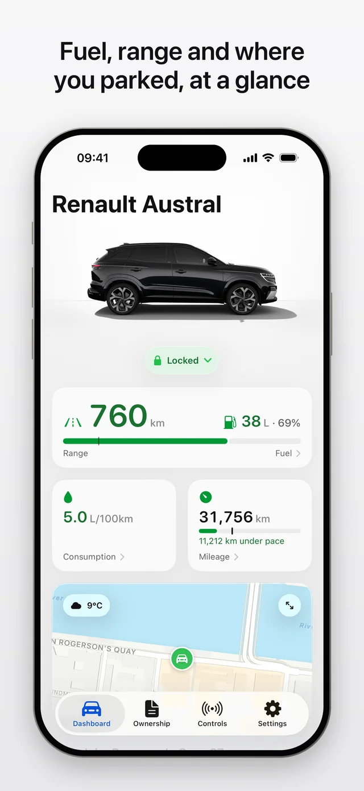
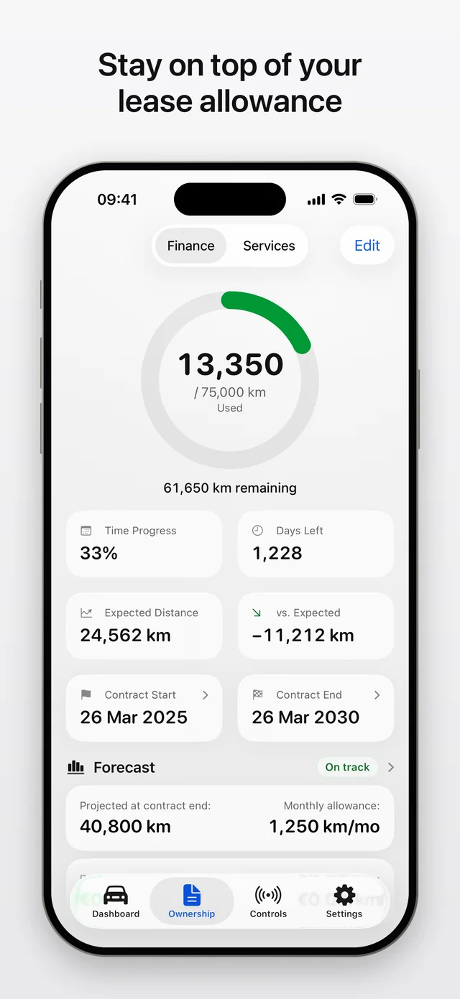
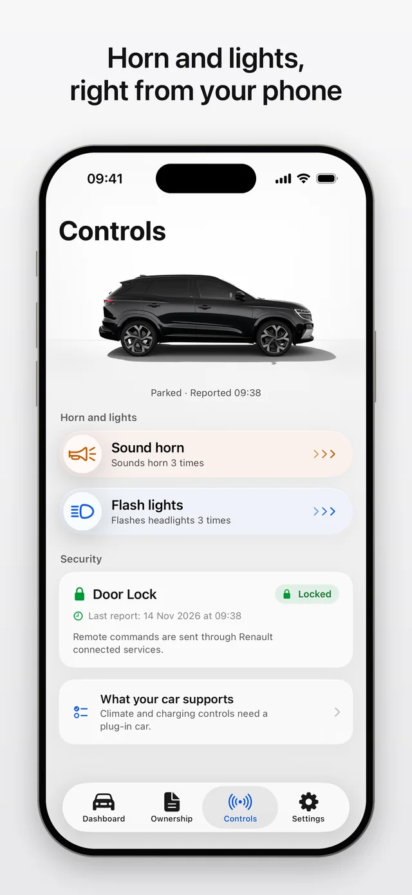
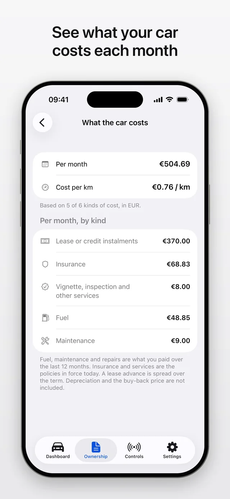
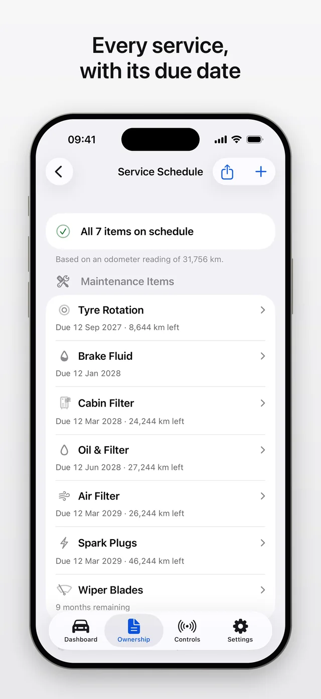
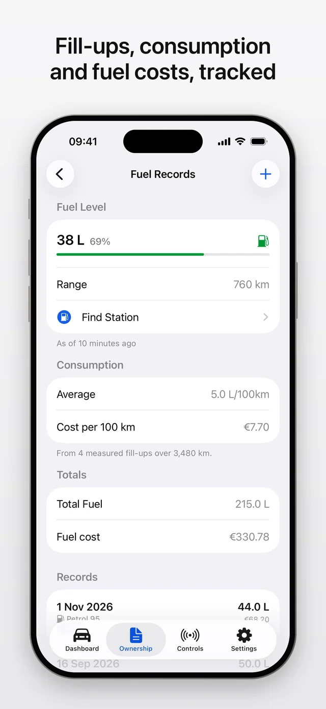
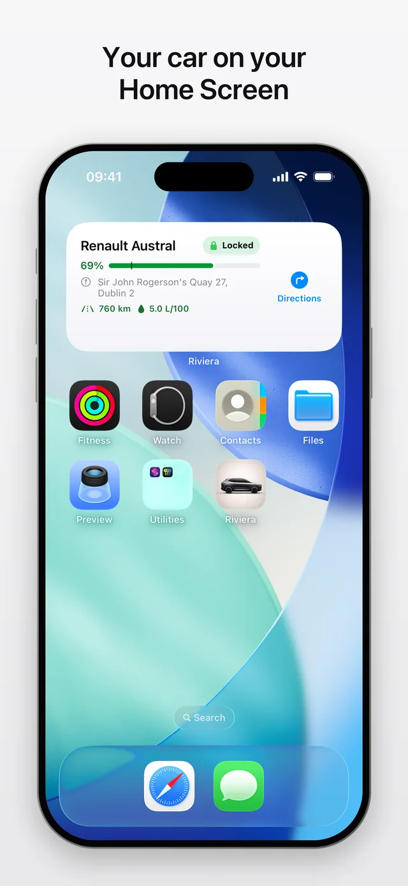

Riviera · an unofficial companion app for Renault connected cars
Your car, at a glance.
Riviera shows your car’s latest fuel or battery level, range and parking location as Renault reports them. It also keeps your fill-ups, services, lease and deadlines in one iPhone app.
Independent and unofficial. Riviera is not affiliated with, endorsed by, or sponsored by Renault s.a.s. For iPhone with iOS 18 or later. Free, with no ads.

- No server of its ownRiviera sends nothing to the developer unless you choose to send something.
- No analytics, no adsNo paid features either.
- Your records stay with youOn your iPhone, plus any backups and features you switch on.
- 21 languagesEnglish plus 20 more. Kilometres or miles, and a choice of 20 currencies.
See it in use
These screens use a sample car with fictional figures. Once you sign in, Riviera shows your own car’s name and picture. You can also try the app without a Renault account: its built-in sample car is named “Sample car” and shown as a plain car silhouette.






Screens are shown in English, with kilometres and euros. Riviera follows your language, units (miles included) and currency.
What Riviera does
Sign in with your own My Renault account, or try the sample car first.
-
Your car, as Renault reports it
Fuel or battery level, range, odometer and parking location, and the lock status on the few models that report it. Riviera shows how old a reading is, and you can pull down on the Dashboard to fetch Renault’s latest reading.
-
Controls, where your car allows them
Sound the horn and flash the lights. On plug-in and electric cars you can also start climate pre-conditioning and use the charging controls, where your model accepts them.
Horn and lights work mainly on cars with OpenR Link, the Android-based touchscreen system in newer Renaults (about 2022 onward), such as the Austral and Mégane E-Tech. Most older Easy Link and R-Link 2 cars refuse the command, and Riviera then says so. Settings › Help & Support › Supported Vehicles shows the system for each model.
-
Fill-ups, consumption and running costs
Log fill-ups by typing, or by scanning a receipt (it reads Romanian and English receipts best, and you check every field before saving). Follow consumption and fuel cost over time, and see what the car costs each month and per kilometre or mile.
-
Services, inspection and deadlines
A service schedule with due dates, plus inspection (MOT, ITP or similar), insurance, and road tax or toll-sticker (vignette) dates. Reminders arrive before things fall due, and service due dates can be added to your Calendar and Reminders with a tap.
-
Lease and contract tracking
Mileage against your contract allowance, days left, a projection to the end of the contract and the estimated cost of going over.
-
Nearby fuel, charging and dealers
Fuel stations around your car, with prices in France, Spain, Austria and Romania, and in Germany with your own free Tankerkönig key. Elsewhere you see station locations without prices; Italy’s price files are read too, but not verified yet. EV chargers and Renault dealers around your car or your phone, on a map.
-
Home Screen, Siri and Shortcuts
Widgets show your car’s fuel, range and parking location. Siri and Shortcuts can read your car’s latest data from what is already on your iPhone, without contacting Renault. Some actions, such as flashing the lights or starting climate pre-conditioning, do contact Renault.
-
Your records
Repairs, documents, tyre sets and notes stay on your iPhone. Switch on iCloud Sync, save a backup file, or share a car’s records, including its VIN and its lease and credit details, with people you invite in a Shared Garage: everyone you invite can read and change them. An optional Apple TV app, switched on in Settings › Data & Sync, shows a summary of your car on your TV.
Privacy
The short version. The full privacy policy is the one to rely on.
- Riviera has no server of its own, no analytics and no ads.
- Your My Renault password goes only to Renault’s sign-in service. Riviera never saves it.
- Your records stay on your iPhone, and in the iPhone backups you make, unless you switch on a feature that copies them, such as iCloud Sync, Shared Garage or Apple TV.
- Fuel, charger and dealer searches send a position rounded to about 100 metres to the public services that answer them, and weather lookups about 10 kilometres. Apple Maps and Apple’s address lookup, which Riviera also uses, receive exact coordinates. The policy lists every service.
- You can erase what Riviera keeps on your iPhone and in your own iCloud from inside the app, without asking the developer. Backups, a Shared Garage you joined and data held by Renault are not touched; the policy lists what remains.
- Riviera itself sends nothing to the developer. What reaches the developer is what you choose to e-mail, plus anonymous crash and usage figures that Apple shares with developers if you allow it in iOS.
Good to know
What Riviera can and cannot show.
- Renault cars only. Your car needs to be connected to a My Renault account. What shows depends on your market, model year, connected-services subscription and privacy mode, and Riviera hides the readings your car does not report.
- Readings can arrive late or be missing. They come from Renault’s servers. Riviera is not a safety system, and its deadlines are estimates and reminders, not legal advice.
- Requirements. An iPhone with iOS 18 or later. The optional Apple TV app needs tvOS 18 or later.
- Free. No ads, no subscription and no paid features.
Questions
The short answers. The full ones are in the app’s Help & Support.
Is Riviera an official Renault app?
No. Riviera is independent and unofficial, and it is not affiliated with, endorsed by, or sponsored by Renault s.a.s. It uses the same sign-in and vehicle-data services as the official My Renault app, with your own account.
Can Riviera lock or unlock my car?
No. Renault’s service has no such command, so Riviera only shows the last lock status your car reports, with the time of that report. It can sound the horn and flash the lights where Renault allows that for your car.
What happens to my password?
Riviera is not Renault’s own app, so you type your My Renault password into a third-party app. You type it only on Riviera’s sign-in screen, it is sent only to Renault’s sign-in service, and Riviera does not save it. Riviera keeps Renault’s sign-in token, your e-mail address and your account IDs, among a few other items listed in the privacy policy, in the iOS Keychain on your iPhone. iOS itself may offer to save the password in your own password manager; that is your choice.
Why doesn’t my car’s data update every minute?
Riviera reads your car through Renault’s servers, which limit how often an account may ask, and the car needs a mobile signal. Pulling down on the Dashboard asks Renault for the latest reading, at most once every 30 seconds.
Which cars does it work with?
Renault cars that appear in your My Renault account. Not every feature exists on every model: climate and charging controls need a plug-in or electric car, and on some newer electric models, such as the Renault 4 and 5, Renault does not accept the charging commands Riviera sends, so charging features there are limited. Some markets have no connected services at all.
What does it cost?
Riviera itself costs nothing: no ads, no subscription and no paid features. Renault’s connected services are separate and may have their own terms.
Contact
Questions, bug reports or ideas? Write in English or Romanian. I read every message and reply as soon as I can.
In the app: Settings › Help & Support › Report a Problem. You see the redacted diagnostics before anything is sent.
Riviera is made and published by Ionuț Andrei Paraschiv, Romania. I cannot help with your My Renault account, your car or its subscription: for those, contact Renault or your dealer.